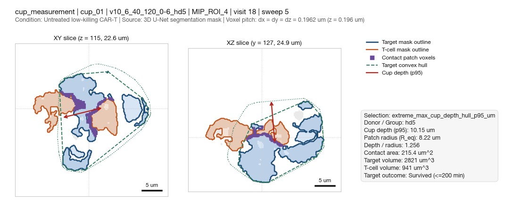

cup_01 (cup_measurement)
#cup_01
Review verdicts (1)
| Reviewer | Verdict | Tags | Note | Timestamp |
|---|---|---|---|---|
| claude | problem | fragmented, merged | Target is several pieces (2,821 um3); hull spans them: 10.2 um 'cup' is a gap, not a dent. | 2026-10-28T20:15:52 |
Numbers
| Metric | Value |
|---|---|
| Group | cup_measurement |
| Panel ID | cup_01 |
| Experiment | v10_6_40_120_0-6_hd5 |
| Chamber | MIP_ROI_4 |
| Visit | 18 |
| Sweep | 5 |
| Condition | Untreated low-killing CAR-T |
| Selection | extreme_max_cup_depth_hull_p95_um |
| Raw volume present | False |
| Voxel pitch (um) | 0.1962 |
| Slice Z center (vox) | 115.0 |
| Slice Y center (vox) | 127.0 |
| Cup depth hull p95 (um) | 10.1489 |
| Patch equiv radius (um) | 8.2175 |
| Cup depth / radius | 1.2558 |
| Contact area (um^2) | 215.361 |
| Target volume (um^3) | 2820.91 |
| T-cell volume (um^3) | 941.45 |
| Killed by 200 min | False |